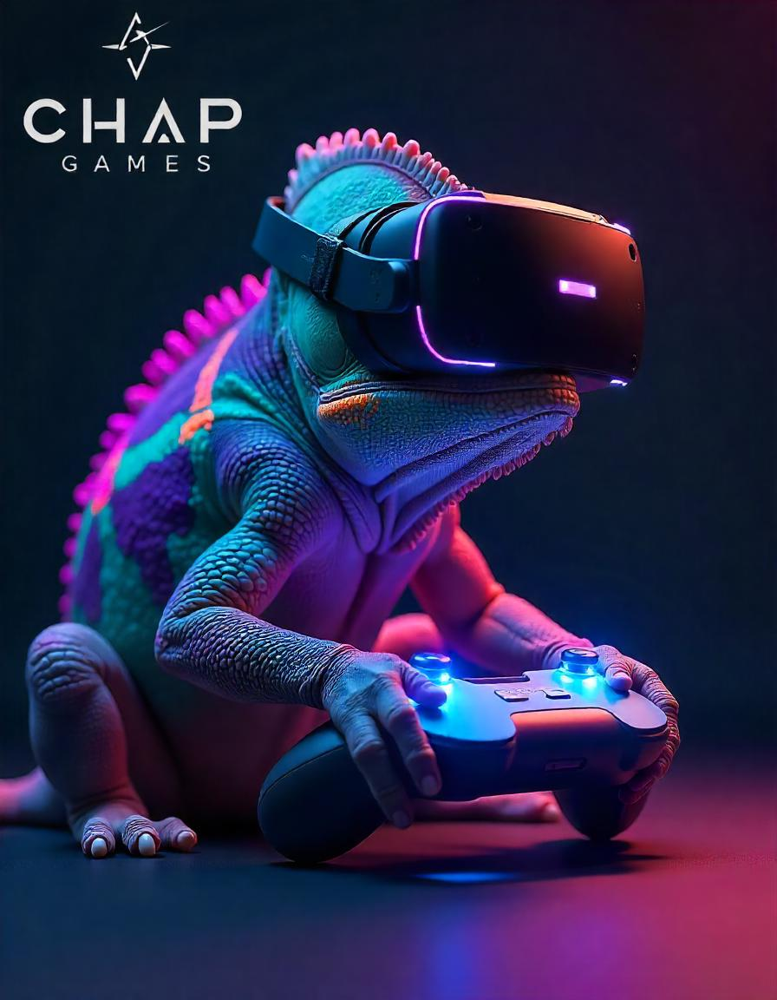
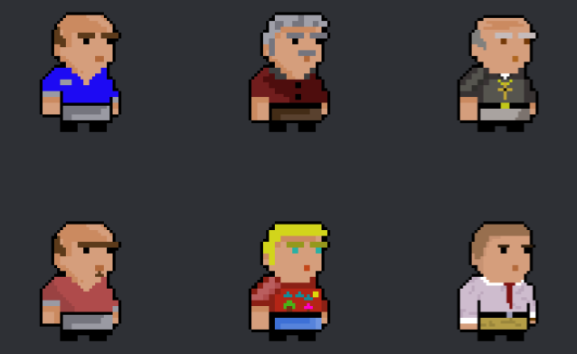

CHAP GAMES es una empresa innovadora en el mundo de los videojuegos. Nos dedicamos a crear experiencias únicas y emocionantes para jugadores de todas las edades.
CHAP GAMES es una empresa emergente, centrada en el desarrollo de juegos indie. Los juegos indie son conocidos por su creatividad, originalidad y la libertad de sus creadores para explorar nuevas ideas sin las restricciones de las grandes compañías. A menudo, estos juegos se destacan por su estilo artístico único, narrativas profundas y mecánicas de juego innovadoras que ofrecen una experiencia fresca y memorable para los jugadores.
En CHAP GAMES, nos especializamos en juegos de suspenso y misterio. Nos apasionan los juegos single player y, sobre todo, aquellos con una historia rica y envolvente. Para nosotros, crear un juego es mucho más que simplemente desarrollar un producto; es narrar una historia al estilo de una película divertida y emocionante.
La empresa fue fundada por cuatro apasionados desarrolladores: Cristian Valdivieso, Héctor Mínguez, Alejandro Blanco y Pablo Romo (de ahí el nombre CHAP, formado por las iniciales de nuestros nombres). Juntos, compartimos la visión de llevar a los jugadores a mundos inmersivos y cautivadores donde cada juego es una nueva aventura.
Somos estudiantes y apasionados de la programación, siempre ávidos de aprender y mejorar nuestras habilidades. Creemos firmemente en el valor del aprendizaje continuo, ya que cada nueva habilidad adquirida enriquece nuestras capacidades como desarrolladores y como narradores de historias.
Nuestros juegos no solo son productos de entretenimiento; son manifestaciones de nuestras vivencias como jugadores. Sabemos lo que se siente perderse en una historia, emocionarse con un giro inesperado o sentir la adrenalina de un desafío bien diseñado. Queremos trasladar esas mismas sensaciones a nuestros jugadores, para que cada sesión de juego sea una experiencia inolvidable.
Desarrollar un juego es una forma de arte, una danza delicada entre código y creatividad, donde cada línea de programación es un verso en un poema épico. Cada juego que creamos es una obra maestra, una ventana a un mundo construido con dedicación y pasión. En CHAP GAMES, no solo creamos juegos; creamos universos donde los jugadores pueden perderse y encontrarse a sí mismos una y otra vez. Porque al final, un gran juego no solo se juega, se vive.
¡Mantente al tanto de nuestros próximos lanzamientos! Tenemos juegos increíbles en camino que no te querrás perder.
CHAP GAMES presenta Valtor, nuestro próximo juego indie de suspenso y misterio. Vive una historia cautivadora donde el protagonista sobrevive a un trágico accidente, solo para descubrir que su hermano podría estar vivo. A medida que exploras la ciudad de Valtor, encuentras pistas y te enfrentas a una red clandestina de tráfico de niños, llevando tu búsqueda a un desenlace inesperado y emocionante.
Valtor estará disponible en la Play Store para Android y en Windows. ¡Prepárate para una experiencia inolvidable! 🚀✨
Próximamente será lanzado un preview del juego. De momento, en la imagen se pueden ver los primeros prototipos de diferentes personajes del juego en primicia.
CHAP GAMES es una empresa emergente en el mundo de los videojuegos, dedicada a crear experiencias únicas y emocionantes para jugadores de todas las edades.
Nos especializamos en juegos indie de suspenso y misterio, con un fuerte enfoque en juegos single player con historias ricas y envolventes.
Nuestro próximo gran lanzamiento es Valtor, un juego indie de suspenso y misterio disponible próximamente en la Play Store para Android y en Windows.
El nombre CHAP GAMES proviene de las iniciales de los fundadores: Cristian Valdivieso, Héctor Mínguez, Alejandro Blanco y Pablo Romo.
Nuestros juegos son diseñados desde la perspectiva de jugadores apasionados, con énfasis en crear historias envolventes y mecánicas innovadoras que ofrezcan experiencias memorables.
Puedes encontrar nuestros juegos en la Play Store para Android y en Windows.
Síguenos en nuestras redes sociales y mantente atento a nuestra página web para conocer las últimas noticias y lanzamientos.
Valtor es nuestro próximo juego indie de suspenso y misterio, en el que el protagonista sobrevive a un trágico accidente y descubre que su hermano podría estar vivo. En su búsqueda, se enfrenta a una red clandestina de tráfico de niños.
Nuestros juegos están disponibles para Android en la Play Store y para Windows.
Puedes contactarnos a través de nuestras redes sociales o enviándonos un mensaje a través de nuestra página web.
CONTÁCTANOS
Síguenos en nuestras redes sociales para no perderte ninguna novedad:
Si deseas ponerte en contacto con CHAP GAMES, puedes completar el siguiente formulario. Estamos disponibles para discutir oportunidades de colaboración, consultas sobre nuestros juegos o cualquier otra pregunta relacionada con nuestros proyectos.